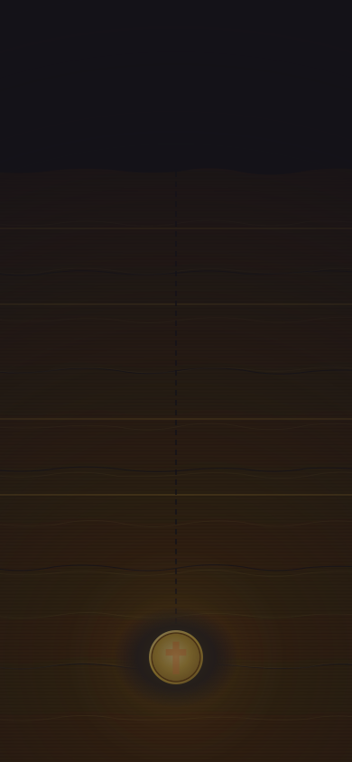
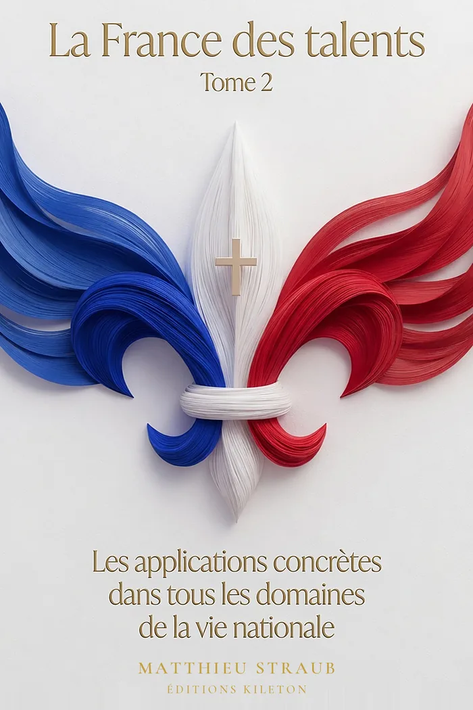

La France des talents
Les Évangiles pour une France libre, responsable et souveraine
Matthieu Straub
ou faites défiler
Une porte entrouverte dans le noir.
Une pièce d’or descend et se pose.
Un maître confie des sommes, des talents, à ses serviteurs,
La porte se ferme. Il ne reste que la pièce.
puis il part.
La terre tombe et recouvre la pièce.
La France meurt sans drame, sans bataille, sans cri.
On se résigne mal à une agonie qui ne fait pas mal.
Ne rien faire, c’est enfouir.Défiler, c’est enfouir.
Coupe de la terre : la pièce est tout au fond, sous les couches datées.

C’est ce que ce livre appelle l’enfouissement des talents.
2025
· 1,56 enfant par femme · INSEE
2002
· Depuis, le droit en vigueur a doublé · Secrétariat général du Gouvernement
Une faille s’ouvre dans la terre, au-dessus de la pièce.
Il revient, et il demande des comptes.
« J’ai eu peur, et je suis allé cacher ton talent dans la terre. »
Matthieu 25, 25
La terre se fend en deux autour de la pièce.
Celui qui, par peur, a enfoui son talent sans rien en faire est condamné, non pour l’avoir perdu, mais pour n’avoir rien osé.

Déterrez-le.
La pièce sort de terre. Sa croix éclaire toute l’image.
La France a reçu des talents. Il est temps de cesser de les enfouir.
La pièce se lève et laisse dans la terre l’empreinte d’un lys. La couverture du livre apparaît.
La France des talents
Les Évangiles pour une France libre, responsable et souveraine
Matthieu Straub
Le pourquoi avant le comment.
« Tu as été fidèle en peu de choses, je t’établirai sur beaucoup. »
Matthieu 25, 21
La personne, puis l’État, puis la société. On ne bâtit pas dans un autre ordre.
Frappez la pièce.
« Que servirait-il à un homme de gagner le monde entier, s’il vient à perdre son âme ? »
Matthieu 16, 26
I. La personne, avant tout le reste Chapitres 1 à 6
Avant l’État, avant la loi, avant l’économie, il y a un être irréductible que rien ne peut échanger contre autre chose.
« Il n’en sera pas ainsi parmi vous : celui qui veut être grand parmi vous sera votre serviteur. »
Marc 10, 43
II. L’État remis à sa place Chapitres 7 à 12
Un pouvoir qui sert et qui rend des comptes.
« Là où deux ou trois sont rassemblés en mon nom, je suis au milieu d’eux. »
Matthieu 18, 20
III. La société qui se relève d’elle-même Chapitres 13 à 17
Rien de grand ne descend d’en haut.
Trois mouvements, dix-sept chapitres
La personne, puis l’État, puis la société. On ne bâtit pas dans un autre ordre.
I. La personne, avant tout le reste Chapitres 1 à 6
« Que servirait-il à un homme de gagner le monde entier, s’il vient à perdre son âme ? » Matthieu 16, 26
Avant l’État, avant la loi, avant l’économie, il y a un être irréductible que rien ne peut échanger contre autre chose. De cette irréductibilité découle tout le reste : la propriété, qui prolonge la personne ; le travail, qui la révèle ; le don libre, qui la grandit ; la famille, qui la fait naître ; la vérité, sans laquelle sa liberté n’est qu’un mot.
La personne libre et responsable · La propriété privée · Le travail, les talents, le risque · La charité volontaire contre la redistribution forcée · La famille comme matrice · La vérité, condition de la liberté
II. L’État remis à sa place Chapitres 7 à 12
« Il n’en sera pas ainsi parmi vous : celui qui veut être grand parmi vous sera votre serviteur. » Marc 10, 43
Le cœur régalien du livre, et sa part la plus dure. Un État réduit à ce que lui seul peut faire, et qui le fait vraiment : la justice, la sécurité, la défense, la monnaie. Un pouvoir qui sert et qui rend des comptes. Une complexité normative démolie, une corruption traquée, une souveraineté reprise. Ici, chaque principe porte un chiffre et une cible.
Rendre à César · Les fonctions régaliennes · Le pouvoir comme service, non comme rente · Détruire la complexité · L’anti-corruption · L’Europe des nations souveraines
III. La société qui se relève d’elle-même Chapitres 13 à 17
« Là où deux ou trois sont rassemblés en mon nom, je suis au milieu d’eux. » Matthieu 18, 20
Rien de grand ne descend d’en haut. L’initiative, l’association, le voisin qui relève le voisin : c’est là que la nation tient debout, ou nulle part. Le pauvre, le malade et l’étranger y sont regardés en face, sans angélisme et sans dureté. Et la parole y reste libre, y compris quand elle dérange, car une civilisation qui n’ose plus se dire a déjà commencé de mourir.
L’initiative individuelle · Les corps intermédiaires et la subsidiarité · Le pauvre, le malade, l’étranger · Vérité publique et liberté d’expression · Civilisation, mémoire, transmission
Premier volet d’un diptyque

Tome 2 Le Comment
Les applications concrètes, domaine par domaine : fiscalité, monnaie, énergie, santé, défense.
Découvrir le tome 2Écouter l’album :